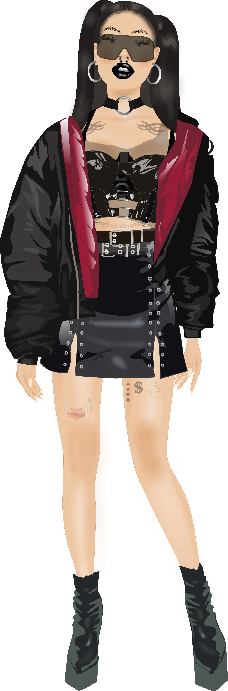
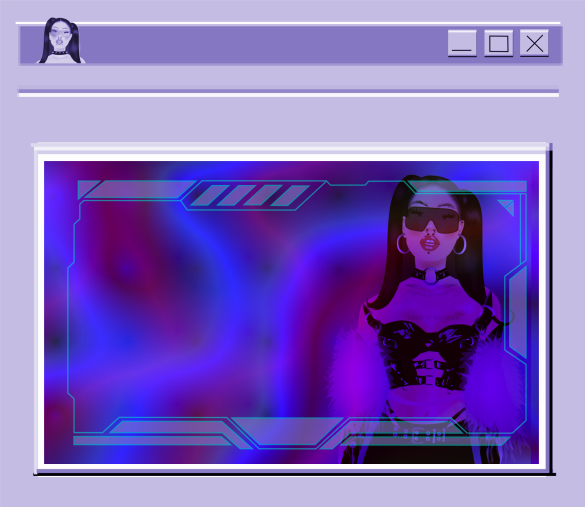

I am currently learning frontend technologies and Python. I am also working on a dress-up game set online in a cyberpunk climate. You can check the graphic concept on my portfolio on
Cyber pal is a dress-up game based on drag and drop mechanism. During the creation of clothes and accessories I wanted to keep them in baddy and some futuristic aesthetic. There are some body modifications such as artificial limbs to choose. I implemented a menu to choose between main game scene and some basic settings such as volume adjustments. I spend much time on graphics to crete more detailed clothes and doll remining real human.
Tools used: Unity, Corel Draw
 